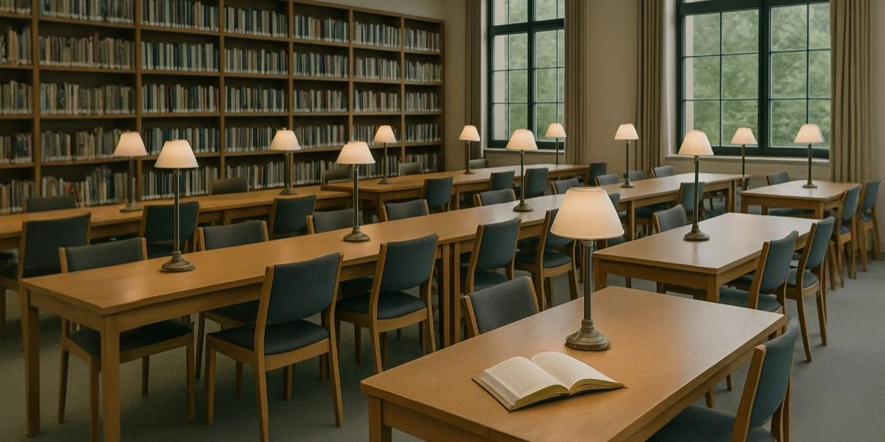

Studieplekken reserveren bij De Leeshoek
Concentratie, rust en een plek om door te werken — daar zorgen wij voor.
Zoek je een stille tafel, een plek met pc of een ruimte om samen te werken? In De Leeshoek kan je
verschillende zones
gebruiken, met duidelijke afspraken en handige voorzieningen.

Soorten studieplekken
Kies de plek die het best past bij jouw manier van werken.
- 🪑Individuele plekken (stil)
- 👥Groepsplekken (overleg toegestaan)
- 🖥️Pc-plekken (met internet)
“Een goede plek maakt studeren de helft makkelijker.”
Zo werkt reserveren
Reserveren is eenvoudig als je deze stappen volgt.
- Kies het type plek (stil, groep of pc).
- Geef datum en tijdsblok door.
- Wacht op bevestiging via e-mail.
- Blok
- Een tijdsperiode waarin je een plek gebruikt, bijvoorbeeld twee uur.
- No-show
- Je reserveert, maar komt niet opdagen zonder te verwittigen.
- Prioriteit
- Tijdens examenperiodes krijgen studenten voorrang.